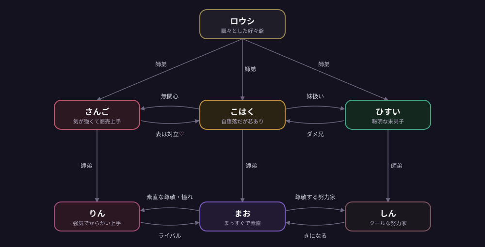

CHARACTERS
Mahjo の占い師たち
運河沿いの中華風の町。ここでは麻雀牌は娯楽ではなく、運命を読む神聖な占術の道具です。
和了形（あがり）を結ぶことは、ひとつの卦（け）を立てること。
役は読み取れる兆し、符・翻はその効き目の強さ—— 占い師たちはそうやって運命を読みます。
まお と りん は、同じ大師匠を頂く同門ながらライバルの二軒の占い館で学ぶ、同年代の見習い。
師匠どうしは旧知で、姉弟子格の先輩もいます。
占いは「答えを押し付けず、気づかせる」もの—— だから二人とも、答えは言わずにそっと導きます。

由緒ある、いまは少しさびれた占い館
歴史はあるが活気を失いつつある館。まおは住み込みで働きながら、館を立て直そうとがんばっています。

エレガントで繁盛している占い館
町で評判の華やかな館。りんはその弟子で、勝手にまおをライバル視しています（同門どうしの身内の張り合い）。

大師匠や両館の師匠、姉弟子など、この町にはほかにも占い師がいます。仲間は少しずつ増えていく予定です。